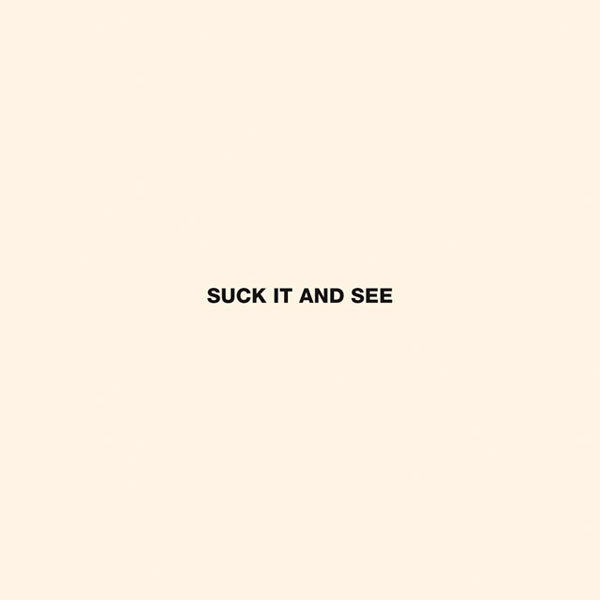

|  | All My Own Stunts | |
|---|---|---|
|
[Verse 1]
Caricatures of your wrecking ball gown In my mind all the time I wanna be in that damsel patterned alley Where you go for a smoke And sorrow slow dances, the phones are lighting up Taking no chances, close but never close enough [Chorus] Been watching cowboy films on gloomy afternoons Tinting the solitude Put on your dancing shoes and show me what to do I know you've got the moves [Verse 2] All my own stunts, high noon has changed its tune Linking arms, sinking hearts And sorrow slow dances around the edges of her eyes Taking no chances, the last one out to win a prize [Chorus] Been watching cowboy films on gloomy afternoons Tinting the solitude Put on your dancing shoes and show me what to do I know you've got the moves [Instrumental break] [Outro: "I'm From High Green" snippet] I'm from High Green I'm from High Green |